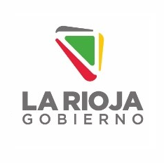
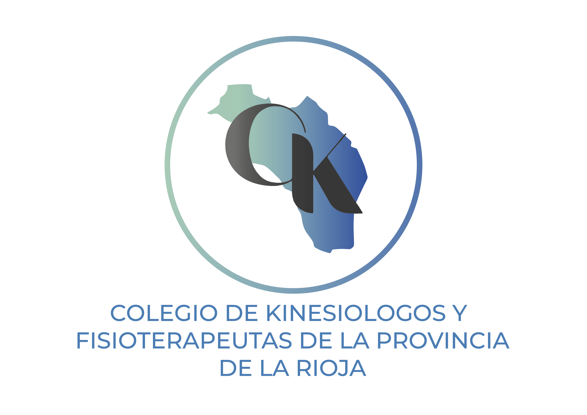
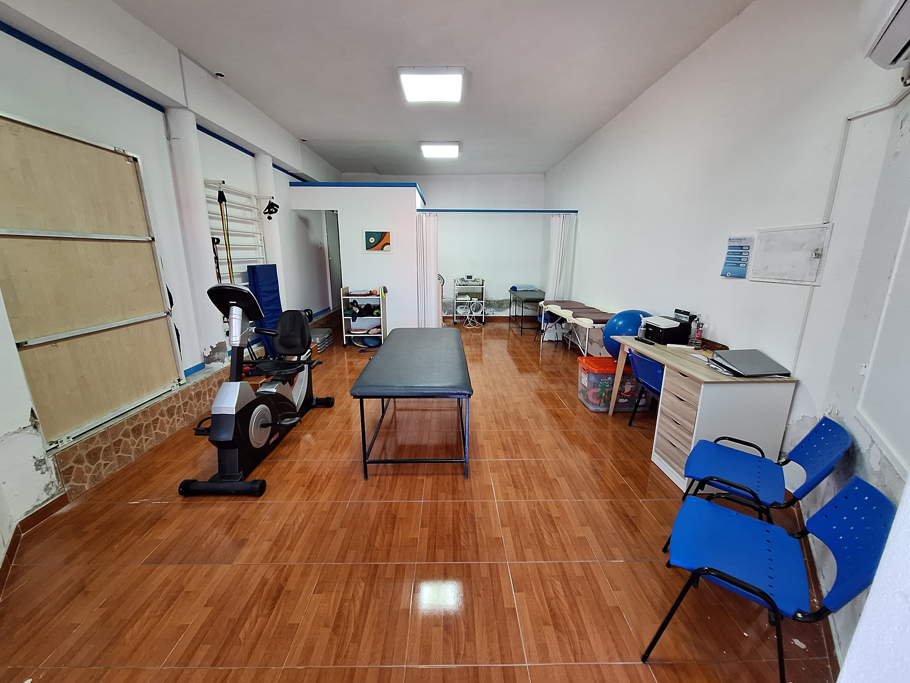
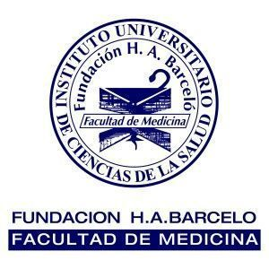

¡Hola! Soy Yamil, tengo 34 años y nací en La Rioja, Argentina.
Mi pasión por la Kinesiología es algo que disfruto profundamente, al igual que practicar deportes y viajar.
Tengo la suerte de contar con una hermosa familia, formada por mis padres, Salim y Gloria, y mis dos hermanos, Zair y Eliana. Además, soy tío de Amira que siempre me llena de alegría..

Ministerio de Salud Publica- Direccion General de APS
Formo parte del equipo de atencion primaria de la salud, realizando tareas para el proyecto denominado acuerdo de gestion dentro del plan provincial de salud.

Colegio de Kinesiologos y Fisioterapeutas
Desempeño funciones como vicepresidente de la institucion cuyo objetivo es regular el ejercicio profesional y organizar formaciones para los colegas.

Consultorio privado
Realizo atencion de pacientes en consultorio privado. El mismo se encuentra en la zona sur de la ciudad capital de La Rioja.

Fundación Barcelo
Me encuentro cursando el ultimo año de la Tecnicatura de analisis de sistemas de informacion medica.
Datos Personales
Nombre: Alem, Salim Yamil
Título: Lic. En Kinesiología y Fisiatría
M.P: 408
Edad: 34 Años
Dirección: Osman Páez N° 4, B° Mis Montañas, 5300/La Rioja- Capital
Email: yamilalem@gmail.com
Teléfono: 0380-154694647
Formación Académica
- 2008: Título Bachiller en Economía y gestión de las organizaciones - Colegio Parroquial PIO XII
- 2016: Lic. en Kinesiología y Fisiatría - Facultad de Medicina Héctor A. Barceló
- 2021: Posgrado en Osteopatía - Esitef (Escuela Internacional de Terapia Física)
Experiencia Laboral
- 2014-2019: Gimnasio Planeta Sport
- 2020-Actualidad: Ministerio de Salud Pública
- 2021-Actualidad: Vicepresidente Colegio de Kinesiólogos de La Rioja
Formación Complementaria
- 2011: Congreso Nacional de Kinesiología realizado en la ciudad de La Rioja. En calidad de asistente.
- 2015: Curso Teórico-Práctico de RCP (Reanimación Cardiopulmonar).
- 2016: Curso anual de rehabilitación neurológica.
- 2017: Certificación MEP Beauty
- 2017: Recursos y estrategias para el abordaje de personas con secuelas neurológicas. Clínica Rita Bianchi.
- 2017: Curso “Lesionados Medulares”. Centro Neuroability.
- 2017: Curso enfermedades genéticas hereditarias poco frecuentes.
- 2019: Curso aplicación de Taping Neuro Facial.
- 2019: Cumbre global de discapacidad. Asistente.
- 2019: Simposio Latinoamericano de posicionamiento de Sentado y Movilidad. Asistente.
- 2021: Taller de ventosas. Asistente
- 2021: Programa continuo de capacitación en abordaje respiratorio y terapia intensiva. Coordinador
- 2023: Formación anual de rehabilitación Neurológica “Castillo Morales”. Asistente